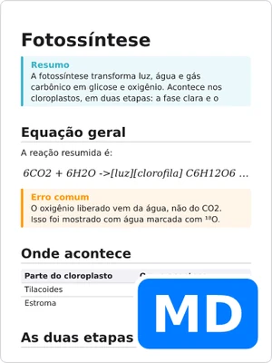
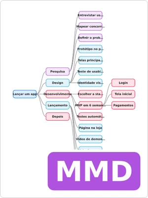
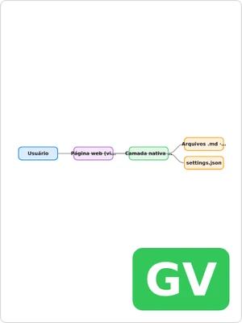
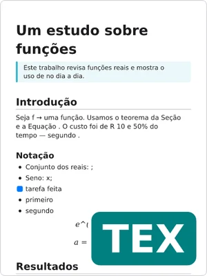
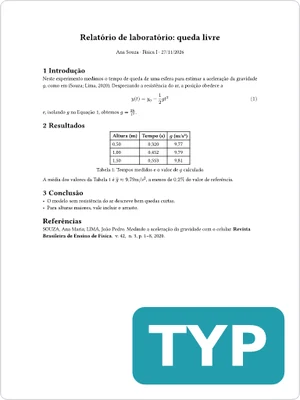
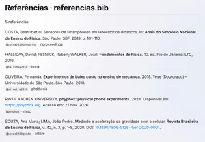

Formatos suportadosSupported formats
O que o Mirante abre com um clique duplo, o que ele entende dentro do Markdown e para onde exporta. Tudo offline e sem instalar mais nada.What Mirante opens with a double click, what it understands inside Markdown and where it exports to. All offline, with nothing else to install.
Sete tipos de arquivoSeven kinds of file
As imagens abaixo são as miniaturas reais que o Mirante gera para o gerenciador de arquivos do Linux.The images below are the real thumbnails Mirante makes for the Linux file manager.

Markdown
.md.markdown.mdown.mkd.mkdn.mdxTexto formatado com tabelas, código, fórmulas, diagramas, caixas de destaque, notas de rodapé e citações. Também vira slides e exporta para Word, LaTeX e PDF.Formatted text with tables, code, formulas, diagrams, callout boxes, footnotes and citations. It also becomes slides and exports to Word, LaTeX and PDF.

Mermaid
.mmd.mermaidFluxogramas, mapas mentais, sequência, classes, estados, Gantt e os outros diagramas do Mermaid. Mapas mentais são editáveis com o mouse e o teclado.Flowcharts, mind maps, sequence, class, state, Gantt and Mermaid's other diagrams. Mind maps can be edited with the mouse and keyboard.

Graphviz
.gv.dotGrafos com todos os motores de layout (dot, neato, circo, twopi, fdp e outros), sem precisar instalar o Graphviz.Graphs with every layout engine (dot, neato, circo, twopi, fdp and more), without installing Graphviz.

LaTeX
.tex.latex.ltxPrévia formatada para ler e revisar: seções numeradas, fórmulas, tabelas, figuras, teoremas, notas, citações e slides Beamer. Não é um compilador: TikZ, por exemplo, não é desenhado.A formatted preview to read and review: numbered sections, formulas, tables, figures, theorems, notes, citations and Beamer slides. It isn't a compiler: TikZ, for example, isn't drawn.

Typst
.typCompilado de verdade pelo compilador do Typst, dentro do app: as páginas aparecem como no PDF final. A internet só é usada para baixar pacotes @preview que ainda não estão no computador.Really compiled by the Typst compiler, inside the app: pages look exactly like the final PDF. The internet is only used to download @preview packages not yet on your computer.

BibTeX
.bibA lista de referências formatada no padrão da ABNT, com a chave de cada uma. O mesmo arquivo alimenta as citações do Markdown, do LaTeX e do Typst.The reference list formatted in the ABNT style, with each entry's key. The same file feeds the citations in Markdown, LaTeX and Typst.
Texto simplesPlain text
.txt.textAbre direto no editor, ocupando a janela, com busca e salvamento como nos outros formatos.Opens straight in the editor, filling the window, with search and saving like the other formats.
Muito além do textoMuch more than text
Além do Markdown do GitHub, o Mirante desenha e entende estes blocos. Os do Obsidian também funcionam.Besides GitHub-flavored Markdown, Mirante draws and understands these blocks. Obsidian's work too.
Diagramas MermaidMermaid diagrams
```mermaid flowchart LR A --> B ```
Grafos GraphvizGraphviz graphs
```dot
digraph { a -> b }
```FórmulasFormulas
$E = mc^2$ $$\int_0^1 x\,dx$$
QuímicaChemistry
$\ce{2H2 + O2 -> 2H2O}$Caixas de destaqueCallout boxes
> [!TIP] DicaTip > Texto da caixa.Box text.
Resposta escondidaHidden answer
> [!QUESTION]- Pergunta?Question? > Resposta.Answer.
CitaçõesCitations
bibliography: refs.bib [@souza2020, p. 10]
Notas de rodapéFootnotes
Texto.[^1] [^1]: A nota.Text.[^1] [^1]: The note.
Obsidian
[[notanote]] ==destaquehighlight== #tag
SlidesSlides
# TítuloTitle --- ## Segundo slideSecond slide
TarefasTasks
- [x] feitodone - [ ] a fazerto do
CabeçalhoFront matter
--- titulo: Meu TCC autor: Ana Souzatitle: My thesis author: Ana Souza ---
Entregue no formato que pediremHand it in the format they ask for
Tudo pelo menu Arquivo.All from the File menu.
| ParaTo | DeFrom | Como ficaWhat you get |
|---|---|---|
| TodosAll | O Typst gera o PDF final pelo compilador; os outros formatos vão pela impressão do sistema, com o visual da prévia.Typst writes the final PDF with its compiler; other formats go through the system's print dialog, with the preview's look. | |
Word .docx | Markdown | Títulos, tabelas e caixas de destaque; fórmulas como equações do Word, diagramas como imagem, notas de rodapé e referências.Headings, tables and callout boxes; formulas as Word equations, diagrams as images, footnotes and references. |
LaTeX .tex | Markdown | Pronto para compilar ou subir no Overleaf, com fórmulas, tabelas, caixas, citações (natbib) e os diagramas em SVG.Ready to compile or upload to Overleaf, with formulas, tables, boxes, citations (natbib) and the diagrams as SVG. |
| LaTeX ABNT | Markdown | Modelo abnTeX2: capa, folha de rosto, resumo, sumário, capítulos e apêndices, com os dados do cabeçalho do arquivo.abnTeX2 template: cover, title page, abstract, contents, chapters and appendices, filled from the file's front matter. |
| SVG | DiagramasDiagrams | O diagrama Mermaid ou Graphviz em vetor, para usar em slides e documentos.The Mermaid or Graphviz diagram as a vector, for slides and documents. |
| Tabela LaTeXLaTeX table | Markdown | Um botão em cada tabela copia só ela em LaTeX, para colar num trabalho que já existe.A button on each table copies just that table as LaTeX, to paste into an existing paper. |